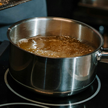

ÉTAPE 1
Épluchez et coupez les pommes de terre en morceaux.
ÉTAPE 2
Mettez-les à cuire dans un grand volume d'eau salée jusqu'à ce que la pointe d'un couteau rentre facilement dans la chair.
ÉTAPE 3
Passez-les alors au moulin à légumes.
ÉTAPE 4
Ajoutez le lait pour délayez jusqu'à la consistance souhaitée, la crème fraîche pour l'onctuosité et un peu de muscade râpée.
ÉTAPE 5
Rectifiez l'assaisonnement et servez bien chaud.
